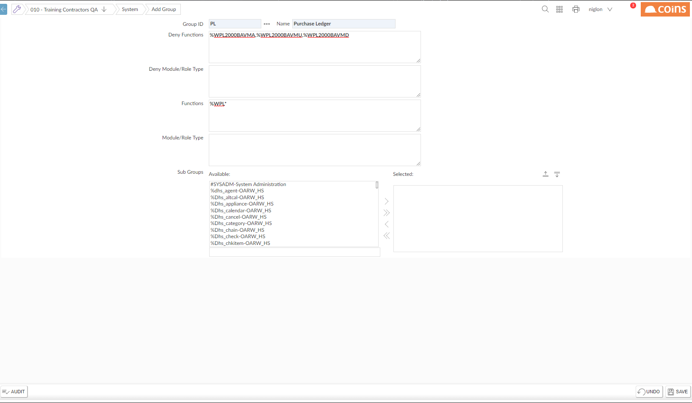

To set a group's function access using wildcards:
- Go to Groups.

- Click
 to open the group record.
to open the group record.
- In the Deny Functions and Functions fields, enter can-do lists for the functions you want to deny or allow access to.
For example, if you want to allow access to all the functions in

Alternatively, to allow some users access to all the functions in
If there are roles that provide the functions you want, you can add these to the group; users who belong to the group will have access to all the functions in the role (or will be denied access, if you enter the role in the Deny Module/Role Type field).
- Click
 .
.
To set a group's access to specific functions:
These only take effect if the functions are not already included in the "allow" or "deny" lists - see above.
- Go to Groups.
- Click the link in the Group ID column of the group whose access permissions you want to change.
You cannot change the access rights for the Root group or SYSAdmin user.
-
- In the Choose Action list, select:
- Set Access to Yes to allow access (or to allow read only access if using Menu Item Security)
- Set Access to Yes-Update to allow update access (only available if you are using Menu Item Security)
- Set Access to No to prevent access.
- Set Access to Group to use the setting from the next group in the user's list.
Because